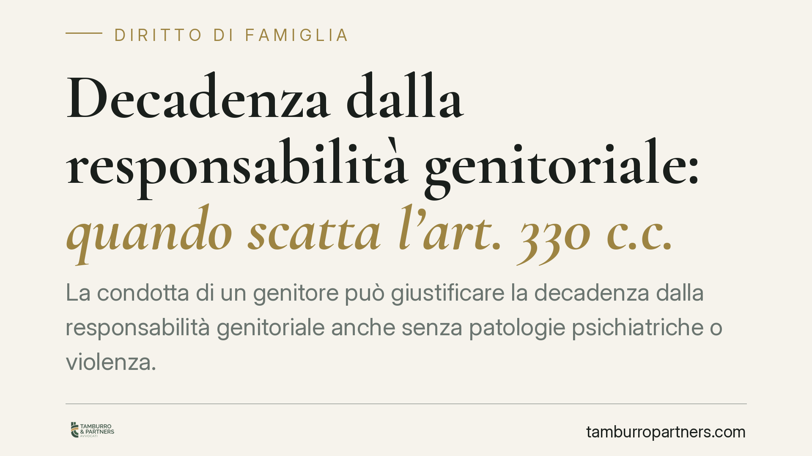

Decadenza dalla responsabilità genitoriale: quando scatta l'art. 330 c.c.
La condotta di un genitore può giustificare la decadenza dalla responsabilità genitoriale anche senza patologie psichiatriche o violenza. Rileva l'incapacità di mettere al centro i bisogni del figlio, anteponendovi i propri. Un orientamento della Cassazione valorizza questo profilo, che chiamiamo per sintesi "autoreferenzialità". Vediamo presupposti normativi, differenze con le misure meno gravi e cosa valutare quando il tema emerge in giudizio.

Il caso e il principio
Un genitore può essere dichiarato decaduto dalla responsabilità genitoriale non solo in presenza di maltrattamenti o disturbi clinicamente accertati, ma anche quando il suo comportamento rivela una stabile incapacità di riconoscere i bisogni del figlio e di anteporli ai propri.
Questo profilo — che possiamo definire "autoreferenzialità" — descrive il genitore che legge la relazione con il minore attraverso le proprie esigenze emotive, usa il figlio nel conflitto con l'altro genitore o si mostra impermeabile alle indicazioni dei servizi e del giudice. È un orientamento che la giurisprudenza di legittimità ha progressivamente consolidato, valorizzando la concreta ricaduta della condotta sul minore più che la sua etichetta diagnostica.
Inquadramento normativo
L'art. 330 del codice civile stabilisce che il giudice può pronunciare la decadenza dalla responsabilità genitoriale quando il genitore "viola o trascura i doveri a essa inerenti o abusa dei relativi poteri con grave pregiudizio del figlio". È una clausola aperta: la norma non elenca condotte tipiche, ma rimette al giudice la valutazione del caso concreto. Proprio questa apertura consente di includere comportamenti che non integrano reato né patologia, ma che producono un pregiudizio grave e attuale.
Va tenuta distinta la misura dell'art. 330 da quella, meno incisiva, dell'art. 333 c.c. Quest'ultimo prevede provvedimenti limitativi quando la condotta del genitore, pur pregiudizievole, non è tale da giustificare la decadenza. Il discrimine è nella gravità e, soprattutto, nella reversibilità: l'art. 333 c.c. mira a correggere, l'art. 330 c.c. a rimuovere.
La decadenza resta infatti la misura più grave e residuale del sistema. Si applica quando ogni intervento meno invasivo risulta inadeguato a tutelare il minore.
Il superiore interesse del minore come criterio-guida
L'intero impianto ruota attorno al principio del superiore interesse del minore (best interest of the child), sancito dall'art. 3 della Convenzione di New York sui diritti del fanciullo del 1989 e dall'art. 24 della Carta dei diritti fondamentali dell'Unione europea.
La Cassazione ha più volte affermato che le decisioni in materia di responsabilità genitoriale devono essere orientate in concreto al benessere del minore, non a logiche sanzionatorie nei confronti dell'adulto. In questa prospettiva, la condotta autoreferenziale rileva proprio perché nega al figlio uno spazio relazionale autonomo: il minore cessa di essere soggetto di diritti e diventa strumento dei bisogni del genitore.
Implicazioni pratiche
Per il genitore coinvolto, questo significa che il procedimento non si gioca su una diagnosi, ma sulla lettura complessiva dei comportamenti: come si relaziona al figlio, come reagisce alle prescrizioni, se è capace di distinguere i propri desideri dalle esigenze del minore.
Assumono peso decisivo le relazioni dei servizi sociali, le consulenze tecniche d'ufficio (CTU) e l'eventuale ascolto del minore. Un atteggiamento ostruzionistico verso gli operatori, o la ripetuta negazione del conflitto, possono essere valutati come indici di quell'incapacità relazionale che fonda la decadenza.
È bene ricordare che la decadenza non è definitiva: l'art. 332 c.c. consente il reintegro quando sono cessate le ragioni che l'avevano giustificata e sia escluso ogni pericolo per il figlio. L'obiettivo del sistema resta il recupero della funzione genitoriale, ove possibile.
Cosa fare in concreto
- Documenta la relazione con il figlio: conserva traccia di contatti, iniziative scolastiche, sanitarie e di cura che dimostrino un coinvolgimento effettivo e orientato ai bisogni del minore.
- Collabora con i servizi sociali: rispetta le prescrizioni e partecipa agli incontri. L'atteggiamento verso gli operatori incide sulla valutazione del giudice.
- Evita di coinvolgere il minore nel conflitto: non trasformare il figlio in alleato o messaggero nei confronti dell'altro genitore.
- Richiedi per tempo la CTU o la relazione aggiornata: un quadro tecnico attuale può correggere letture superate della situazione familiare.
- Se è intervenuta la decadenza, valuta l'istanza di reintegro ex art. 332 c.c.: documentando il cambiamento concreto delle condizioni che l'avevano determinata.
In questi procedimenti il supporto di un difensore è opportuno: le valutazioni sono tecniche e la posta in gioco è la relazione con il figlio.
---
*Contributo informativo a cura di Tamburro & Partners Avvocati — Avv. Giuseppe Tamburro. Non costituisce parere legale.*
Ogni famiglia ha il suo equilibrio.
Separazione, divorzio, affidamento, assegno: se vuoi un confronto riservato su una specifica situazione, scrivi allo studio. Ti rispondiamo entro un giorno lavorativo.